Els restaurants de Barcelona que més triomfen a Instagram fan 6 tipus de vídeo. Comptem els m'agrada: les visualitzacions es poden comprar amb anuncis, els m'agrada no.
Aquí els teniu, amb el vídeo de veritat.
Sota cadascun: què gravaríem a El Tiet.
Per començar: el 1 i el 2. L'Iván explicant una recepta, i el foc de prop.
1 👨🍳 El xef explica la recepta d'un clàssicEl cuiner, a càmera, ensenya com fa un plat de tota la vida. La gent el desa i el comenta.
Restaurant El Racó d’En Binu · 28.800 seguidors · fa 4 mesos
❤️ 4.044 💬 261 👁 100.994
×8,2 m'agrada respecte als seus vídeos normals
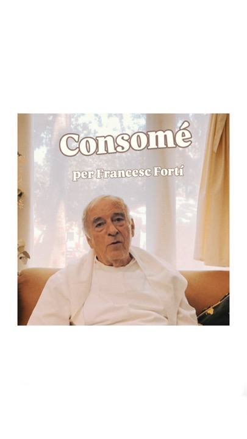
▶ Obrir a Instagram ↗
Restaurant El Racó d’En Binu · 28.800 seguidors · fa 5 mesos
❤️ 2.871 💬 215 👁 91.893
×5,8 m'agrada respecte als seus vídeos normals
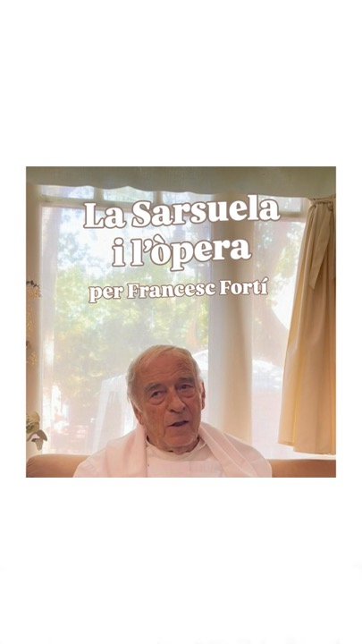
▶ Obrir a Instagram ↗
Restaurant El Racó d’En Binu · 28.800 seguidors · fa 4 setmanes
❤️ 2.515 💬 156 👁 72.134
×5,1 m'agrada respecte als seus vídeos normals
▶ Obrir a Instagram ↗
A El Tiet: L'Iván explica en 30 segons com fa un plat seu: el suquet, un guisat, el que vulgui. En català, amb la seva gràcia.
2 🔥 El plat i el foc, molt de propRes més: la brasa, el plat que es fa, el so. Senzill.
Ultramarinos Marín · 59.600 seguidors · fa 7 setmanes
❤️ 1.333 💬 22 👁 47.752
×3,6 m'agrada respecte als seus vídeos normals
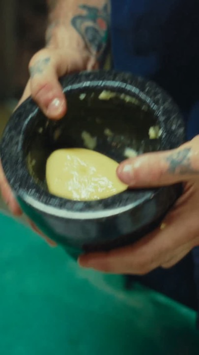
▶ Obrir a Instagram ↗
TRÜ · 9.268 seguidors · fa 3 mesos
❤️ 1.066 💬 10 👁 72.165
×4,7 m'agrada respecte als seus vídeos normals
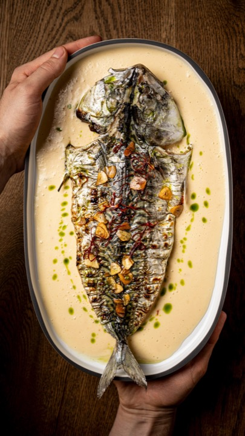
▶ Obrir a Instagram ↗
L’Esmolet · 5.214 seguidors · fa 7 dies
❤️ 835 💬 25 👁 27.471
×3,7 m'agrada respecte als seus vídeos normals
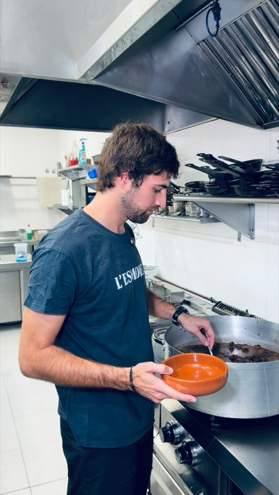
▶ Obrir a Instagram ↗
A El Tiet: La brasa, el bufador, la salsa que bull, molt a prop, amb el so real. El suquet d'avui ja és d'aquest tipus.
3 📺 Una sèrie per capítols«Capítol 1», «Capítol 2»... La gent torna per veure el següent.
Ultramarinos Marín · 59.600 seguidors · fa 3 mesos
❤️ 1.153 💬 29 👁 38.220
×3,1 m'agrada respecte als seus vídeos normals
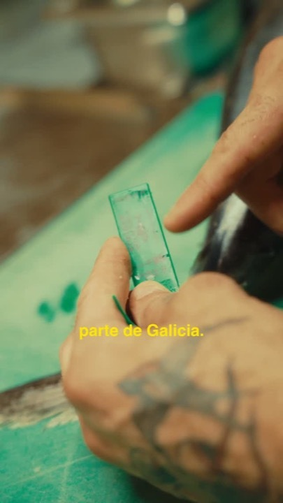
▶ Obrir a Instagram ↗
A El Tiet: «El producte de la setmana»: cada setmana un producte que compra l'Iván, del mercat al plat.
4 👥 L'equip, a la cuina per dinsLes persones que hi ha darrere dels plats. Fa proper el restaurant.
Ultramarinos Marín · 59.600 seguidors · fa 4 mesos
❤️ 815 💬 22 👁 26.851
×2,2 m'agrada respecte als seus vídeos normals
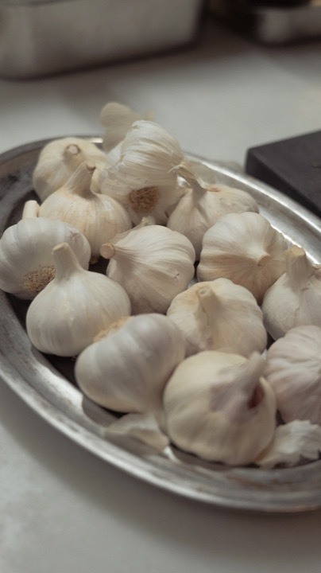
▶ Obrir a Instagram ↗
Ultramarinos Marín · 59.600 seguidors · fa 5 mesos
❤️ 647 💬 17 👁 20.658
×1,7 m'agrada respecte als seus vídeos normals
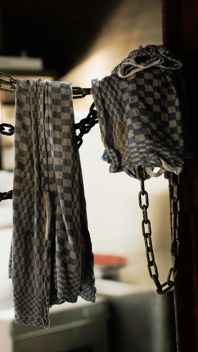
▶ Obrir a Instagram ↗
A El Tiet: Un matí a la cuina d'El Tiet: l'Iván, la Bea, la preparació. Clips curts, sense posar.
5 🥂 Els clients de sempreUn client de tota la vida explica per què torna. Genera confiança.
Can Culleretes · 12.100 seguidors · fa 4 mesos
❤️ 522 💬 34 👁 17.086
×3,2 m'agrada respecte als seus vídeos normals
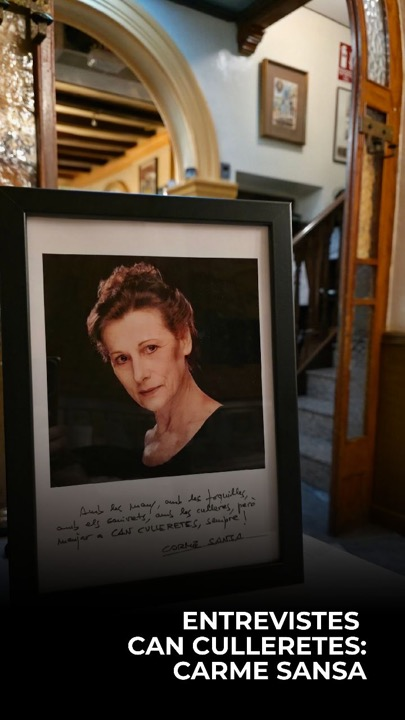
▶ Obrir a Instagram ↗
TRÜ · 9.268 seguidors · fa 3 mesos
❤️ 617 💬 85 👁 20.129
×2,7 m'agrada respecte als seus vídeos normals
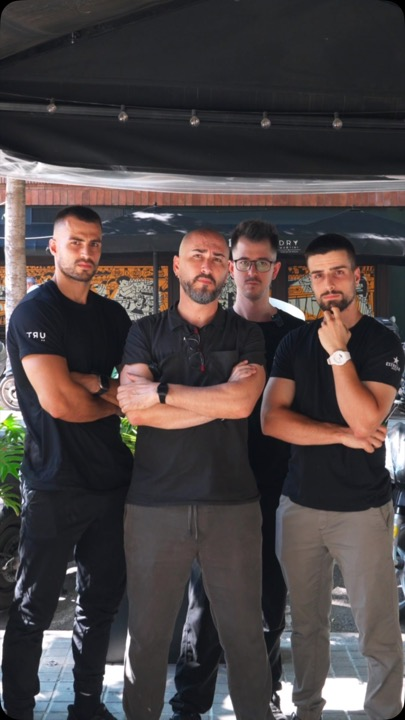
▶ Obrir a Instagram ↗
A El Tiet: Un client fidel, 20 segons a càmera: què demana sempre i per què.
6 📱 Un creador de menjar us visitaEl que fa més m'agrada de tot: un creador que dina al restaurant. Aquest és a Mallorca 250, a cinc minuts d'El Tiet.
Victor Prous · 656.000 seguidors · fa 2 dies
❤️ 10.902 💬 191 👁 345.229
×0,4 m'agrada respecte als seus vídeos normals
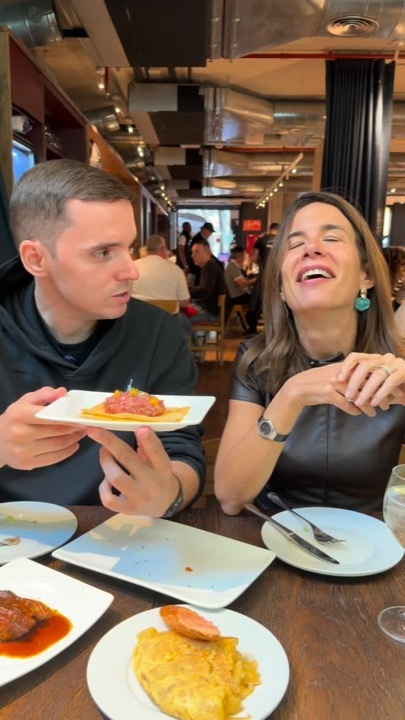
▶ Obrir a Instagram ↗
A El Tiet: Un creador petit de Barcelona, de 1.000 a 10.000 seguidors, que dini a El Tiet. Us busquem els que encaixen.
💶 Quant costa: un Reel d'un creador com aquest, de 656.000 seguidors, uns 5.600 a 50.000 €. Un de 10.000 a 100.000 seguidors, uns 280 a 5.000 €. Un de 1.000 a 10.000 seguidors, uns 50 a 300 €. Són estimacions de guies de preus del 2026.
❤️ m'agrada · 💬 comentaris · 👁 visualitzacions